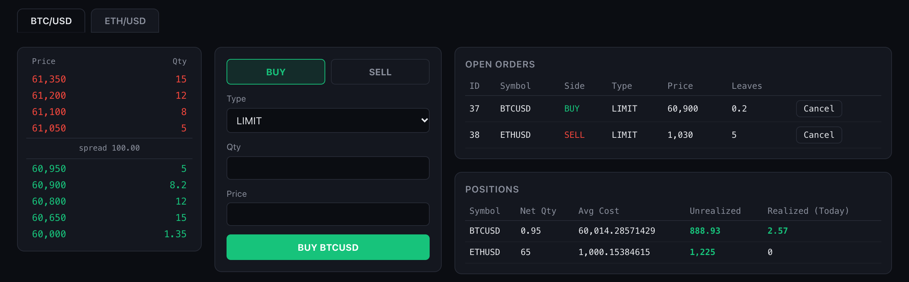
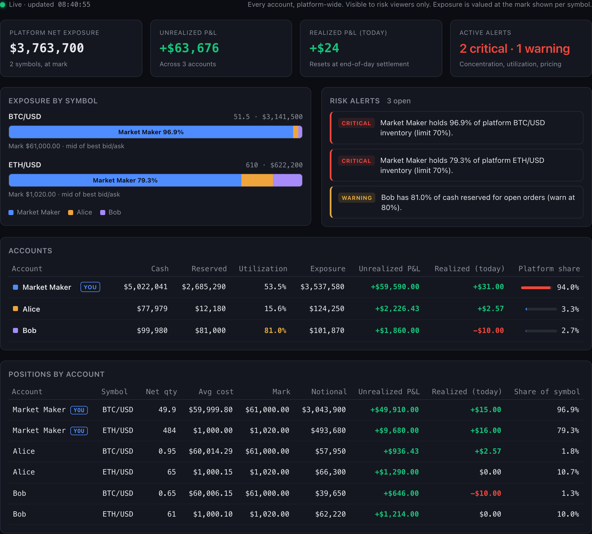
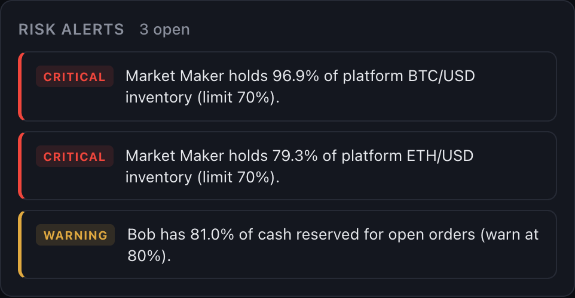
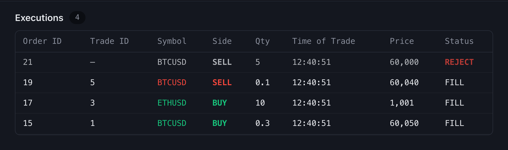

I built a trading platform and a risk engine, end to end.
Accounts trade each other through a real matching engine, and a risk cockpit watches every position.
A simulation, built to run on a laptop
Swipe →
JMITrading Platform
2 / 6
The engine
A real matching engine, not a price feed.

Price/time priority. Limit and market orders.
Pre-trade checks reserve cash and inventory, so open orders can't over-commit an account.
Invalid orders are rejected, never queued.
BTC/USD and ETH/USD, accounts trading each other
Swipe →
JMITrading Platform
3 / 6
The risk engine
Every account's exposure, live.

Positions, P&L and concentration for every account, valued at mid, else last trade.
No price yet? It shows as unvalued, never as zero.
Pushed over WebSocket. Only the market maker can open it, enforced on the server.
Market maker's view of all three accounts
Swipe →
JMITrading Platform
4 / 6
Alerting
It flags the problem before a person has to.

CRITICALOne account holds over 70% of a symbol's inventory
WARNINGReserved cash is 80% or more of an account's balance
WARNINGA held symbol has no price, so exposure is unvalued
Thresholds are config, not code. Alerts are computed live from current positions, so they clear on their own.
Real output from the demo session
Swipe →
JMITrading Platform
5 / 6
Audit trail
Every fill and every reject, on the record.

trade_logs/YYYYMMDD.csv · one trade, both counterparties
trade_id
account
side
order_price
fill_price
qty
realized_pnl
Rejects keep their reason. Nothing is silently dropped.
Both sides show the order price against the price executed, and P&L at that moment.
T+0 settlement, with an idempotent end-of-day close.
Alice's blotter, and a peer-to-peer trade
Swipe →
JMITrading Platform
6 / 6
Results
What I'd bring to your desk.
31
automated tests passing, including a FIX end-to-end
3ms
median order ack, and 9 ms when it fills
43ms
from a fill to the risk view update
5.7k
lines of Python, TypeScript and Terraform
Where it maps to the job
Pre-trade risk controls and entitlements
Position, P&L and settlement logic
FIX connectivity and real-time data
Cloud infrastructure as code, cost-aware
Open to roles in trading technology and risk.Message me and I'll walk you through the demo.
A simulation, not production. The FIX gateway is a template and the AWS stack is validated, not deployed. Latencies measured on a laptop with a local database.